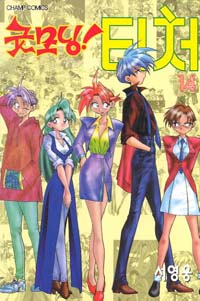

제 112화: 졸업사진 찍는 날
제 113화: 타고난 게 다른 걸
제 114화: 몸과 마음이 같은 장소에...
제 115화: 생각, 생각, 생각?
제 116화: 호랑나비
제 117화: 꼴불견이야
제 118화: 말려줘!
제 119화: 위선적인 웃음...멍청한 웃음... 내가 제일 싫어하는 것들...
제 120화: 해야만 하는 일... 할 수 있는 일... 하고 싶은 일...
제 121화: 가을...일출고